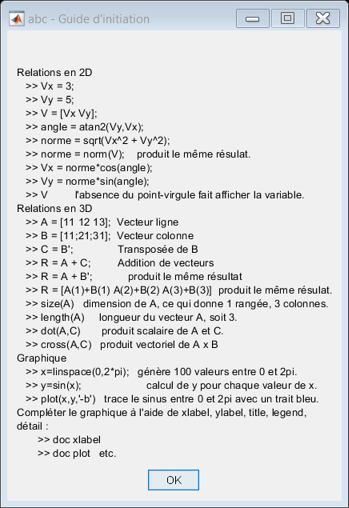

% abc - Guide d'initiation à Matlab % Révision de l'analyse vectoriel msgbox({ 'Relations en 2D' ' >> Vx = 3;' ' >> Vy = 5;' ' >> V = [Vx Vy];' ' >> angle = atan2(Vy,Vx);' ' >> norme = sqrt(Vx^2 + Vy^2);' ' >> norme = norm(V); produit le même résulat.' ' >> Vx = norme*cos(angle);' ' >> Vy = norme*sin(angle);' ' >> V l''absence du point-virgule fait afficher la variable.' 'Relations en 3D' ' >> A = [11 12 13]; Vecteur ligne' ' >> B = [11;21;31]; Vecteur colonne' ' >> C = B''; Transposée de B' ' >> R = A + C; Addition de vecteurs' ' >> R = A + B''; produit le même résultat' ' >> R = [A(1)+B(1) A(2)+B(2) A(3)+B(3)] produit le même résulat.' ' >> size(A) dimension de A, ce qui donne 1 rangée, 3 colonnes.' ' >> length(A) longueur du vecteur A, soit 3.' ' >> dot(A,C) produit scalaire de A et C.' ' >> cross(A,C) produit vectoriel de A x B' 'Graphique' ' >> x=linspace(0,2*pi); génère 100 valeurs entre 0 et 2pi.' ' >> y=sin(x); calcul de y pour chaque valeur de x.' ' >> plot(x,y,''-b'') trace le sinus entre 0 et 2pi avec un trait bleu.' 'Compléter le graphique à l''aide de xlabel, ylabel, title, legend,' 'détail :' ' >> doc xlabel' ' >> doc plot etc.'},... 'abc - Guide d''initiation',... 'replace')
